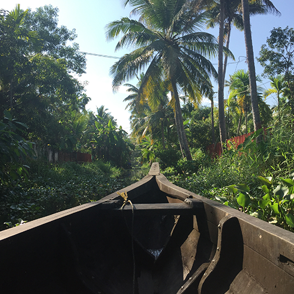

Designer + creative thinker.
Expat + traveler.
I’ve made design problem-solving my career.
I got my start in editorial design. At Imagination Publishing in Chicago, I learned the art of using visual cues to guide readers through content. At Georgetown University in Qatar, I expanded my skill set, overseeing projects across a multicultural, multilingual organization. At bloc.io, I was formally introduced to a few new disciplines—UX, UI, and product design—and I’ve learned to incorporate research, analysis, and testing into my design process, allowing the best possible product to surface and user-centered design to reign.
I moved overseas a few years ago, so I spend a lot of time in airports—humanity’s ubiquitous travel headache. Airports can be excellent examples of good design, but often, they’re the opposite. Each time I walk through a new terminal, I pay attention to the signage around me. Individually, each sign tells a simple message: bathrooms are that way, put out that cigarette, your flight is canceled. But taken together, they are a complex and efficient visual solution to the problem of how to get people who may not speak the same language from point A to point B.
The ability to help people by making complicated things simpler, even if the audience doesn’t consciously notice, is powerful, and airports always remind me why I chose to be a part of that creative process.
Find me on Instagram
“
Done well, design isn’t simply making things look pretty, it’s the art of communication; it’s ensuring your message is heard when words aren’t enough.
”
Let's Work Together!
I'm always looking forward to my next adventure in design—or otherwise! Email me if you like my work and are interested in collaborating.